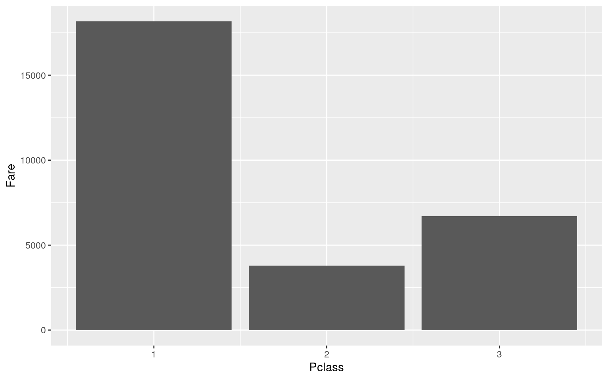

library(reticulate)Today we will be learning the reticulate packedge in R and how to use Python in the same R Markdown file!
#This is a R Code Chunk
R_Var <- "Hello I was made in R"Here is a variable assignment in R
#This is a Python Code Chunk
Py_Var = "Heyo I was made in Python"Here is variable assignment in Python
#Python Code Chunk
print(r.R_Var)## Hello I was made in Rprint(Py_Var)## Heyo I was made in PythonWe can acess both R and Python variables together the same code chunk! In a Python Code chunk, to access R variables a prefix of r. is needed: r.<R-Variable-Name>
#R code chunk
cat( R_Var )## Hello I was made in Rcat( py$Py_Var )## Heyo I was made in PythonThis can also be done in reverse! So if you want to access a Python variable in R, a prefix of py$ is needed: py$<R-Variable>
For this example we will be getting data input from Python and send it to R for easy plotting using ggplot2
I will be using the titanic dataset
#Python Code Chunk
import pandas as pd
titanic = pd.read_csv("titanic.csv")
titanic.head(8)## PassengerId Survived Pclass ... Fare Cabin Embarked
## 0 1 0 3 ... 7.2500 NaN S
## 1 2 1 1 ... 71.2833 C85 C
## 2 3 1 3 ... 7.9250 NaN S
## 3 4 1 1 ... 53.1000 C123 S
## 4 5 0 3 ... 8.0500 NaN S
## 5 6 0 3 ... 8.4583 NaN Q
## 6 7 0 1 ... 51.8625 E46 S
## 7 8 0 3 ... 21.0750 NaN S
##
## [8 rows x 12 columns]Here we imported the Pandas Module in Python to grab the titanic dataset and store it in a Python variable.
library(tidyverse)
ggplot(py$titanic, aes(x=Pclass,y=Fare)) +
geom_bar(stat="identity", fun=mean)
Using the Reticulate package in R this Python variable is accessed with the py$. It was then mapped into ggplot to make a quick and easy plot!